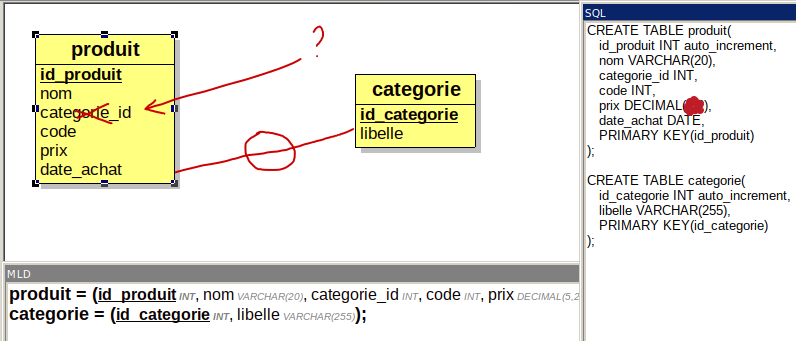

-- connexion sans indiquer une base de données
-- mysql --user=login --host=serveurmysql.iut-bm.univ-fcomte.fr --password=secret
-- mysql -u login -h serveurmysql -p
SHOW DATABASES;
USE BDD_login_tp;
USE BDD_login
DROP DATABASE BDD_login_tp;
SHOW DATABASES;
CREATE DATABASE BDD_login_tp;
-- interdit sur serveurmysql mais autorisé sur serveurmysql2
CREATE USER 'login' IDENTIFIED BY 'secret';
GRANT ALL PRIVILEGES ON *.* TO 'login';
--lors de la création des comptes des étudiants de S1
GRANT ALL PRIVILEGES ON BDD_login.* TO 'login';Configurez les raccourcis si ce n’est pas fait
Configurez Datagrip
| produit |
|---|
| id_produit nom categorie code prix date_achat |
Insérer les enregistrements (occurrences tuples) ci dessous (on ne
distingue pas le conditionnement Kg ou à la pièce pour le Prix ), la
valeur de l’attribut (colonne) id_produit peut être
différent car on ne gère pas les valeurs
(AUTO_INCREMENT).
| id_produit | nom | categorie | code | prix | date_achat |
|---|---|---|---|---|---|
| 1 | Pommes | fruits | 01002 | 4,5 | 2021-10-1 |
| 2 | Poires | fruits | 01008 | 4 | 2021-09-30 |
| 3 | potiron | légumes | 02018 | 3 | 2021-09-21 |
| 4 | haricots | légumes | 02089 | 18 | 2021-10-2 |
| 5 | Cerises | fruits | 01068 | 15 | 2021-09-30 |
| 6 | Patates | légumes | 02068 | 3 | 2021-09-30 |
AUTO_INCREMENT, mettre la valeur NULL dans
l’instruction INSERT pour créer un enregistrement (une
occurrence, un tuple) . Ne jamais mettre de valeur entière, MySQL
l’autorise, mais ce n’est pas le cas des autres SGBDR.**-- R1 : puis -- R2 : … pour le requête 1 puis
2source tp4.sqlSELECT * FROM produit ;Aidez vous des informations sur : https://www.w3schools.com/SQL/sql_and_or.asp
+---------+
| nom |
+---------+
| Pommes |
| Poires |
| Potiron |
| Patates |
+---------++---------+-------+
| nom | prix |
+---------+-------+
| Cerises | 15.00 |
+---------+-------+Aidez vous des informations sur : https://www.w3schools.com/SQL/sql_between.asp
+----------+
| nom |
+----------+
| Potiron |
| haricots |
| Patates |
+----------+
Aidez vous des informations sur : https://www.w3schools.com/SQL/sql_delete.asp
Sur le même principe, modifier le produit d’identifiant 5, rajouter 1€ au prix
Requête 6 : Pour les personnes qui ont déjà fait du SQL : Ajouter
une semaine à la date d’achat, mais c’est bien plus compliqué ! https://www.w3schools.com/sql/func_mysql_date_add.asp
Dans l’attribut categorie, l’utilisateur écrit toujours un mot avec comme valeur : « fruits », « légumes »
Que se passe t’il si le mot “légumes” n’est pas écrit correctement ? :
ATTENTION : le nom des colonnes proposé par datagrip n’est pas bon, il est possible de déactiver l’affichage de cette aide : “File / Settings / Editor ; Code Style ; Inlay Hints ; disable Parameter Names”
| id_produit | nom | categorie | quantite | prix | date_achat |
|---|---|---|---|---|---|
| 7 | tomate | Légume | 5 | 4 | 2021-09-30 |
| 8 | salade verte | legumes | 5 | 1,5 | 2021-09-30 |
| 9 | radis noir | LEGUMES | 5 | 3,5 | 2021-09-30 |
Résultat possible :
+-----------------+-----------+
| nom | categorie |
+-----------------+-----------+
| Potiron | Légumes |
| haricots | Légumes |
| Pommes de Terre | Légumes |
| Salade verte | legumes |
| radis noir | LEGUMES |
+-----------------+-----------+contenu de la table produit
+------------+-----------------+-----------+--------------+----------+---------+------------+
| id_produit | nom | categorie | categorie_id | quantite | prix | date_achat |
+------------+-----------------+-----------+--------------+----------+---------+------------+
| 1 | Pommes | Fruits | NULL | NULL | 4.5000 | 2021-10-01 |
| 3 | Potiron | Légumes | NULL | NULL | 3.0000 | 2021-09-21 |
| 4 | haricots | Légumes | NULL | NULL | 18.0000 | 2021-10-02 |
| 5 | Cerises | Fruits | NULL | NULL | 16.0000 | 2021-09-30 |
| 6 | Pommes de Terre | Légumes | NULL | NULL | 3.5000 | 2021-09-30 |
| 7 | Poires | Fruits | NULL | NULL | 4.0000 | 2021-09-30 |
| 8 | tomate | Légume | NULL | 5 | 4.0000 | 2021-09-30 |
| 9 | Salade verte | legumes | NULL | 5 | 1.5000 | 2021-09-30 |
| 10 | radis noir | LEGUMES | NULL | 3.5 | 5.0000 | 2021-09-30 |
+------------+-----------------+-----------+--------------+----------+---------+------------+``Pour faire référence à la catégorie de légumes, il est préférable d’utiliser une autre table pour éviter les ambiguïtés et éviter de dupliquer des informations dans une même table

Sur le même principe, on désire enregistrer le nom du fournisseur, son adresse, son téléphone et minimiser les erreurs si une des informations concernant les fournisseurs change.
Proposer une solution pour sauvegarder ces informations et modifier votre schéma en conséquence